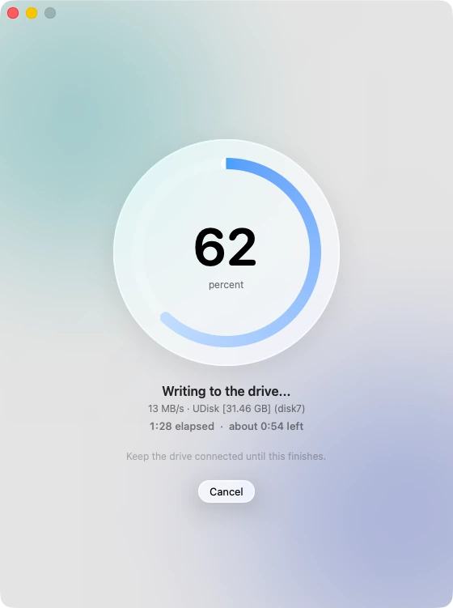
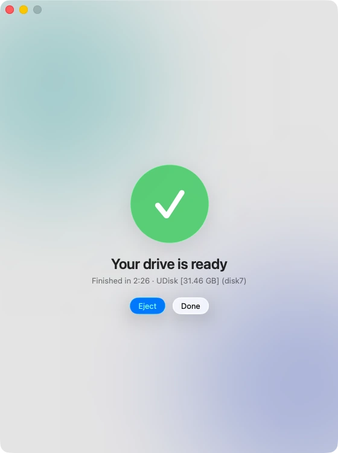
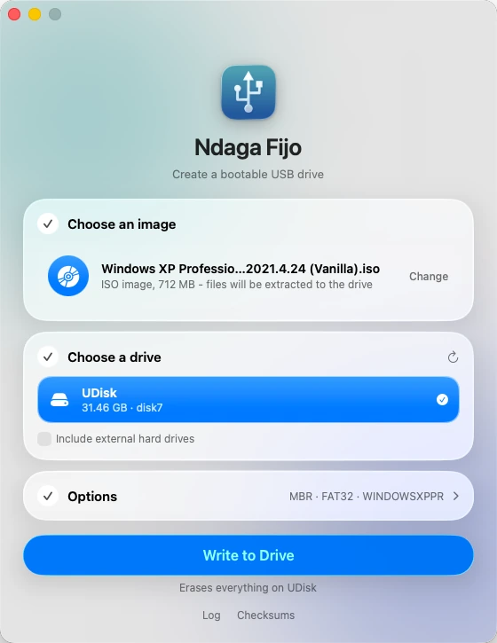
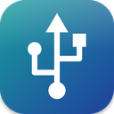

The 4 GB wall
FAT32 can't hold a file over 4 GB, and current Windows ISOs carry an install.wim that big. Ndaga Fijo splits it into .swm parts that Windows Setup reads natively.
Free · Open source · Native for macOS
Ndaga Fijo turns any ISO into a bootable drive, Windows 10 and 11 included, with a native Liquid Glass app. It builds the drive on your Mac's SSD and writes it to the stick in one fast pass.
Apple Silicon + IntelmacOS 13+GPL v3No tracking, no account



What it solves
Rufus is brilliant, but it only runs on Windows. The usual Mac workarounds are slow, fragile, or just don't work. Ndaga Fijo fixes the four things that go wrong.
FAT32 can't hold a file over 4 GB, and current Windows ISOs carry an install.wim that big. Ndaga Fijo splits it into .swm parts that Windows Setup reads natively.
Copying a 7,000-file ISO straight onto a stick took 34 minutes in our test. Ndaga Fijo stages it on your SSD and streams it once: 2 min 26 s.
It only lists removable drives, refuses the disk macOS runs from, and makes you confirm by name before it erases anything.
Boot Camp Assistant is gone and Rufus is Windows-only. This is a real Mac app: SwiftUI, Liquid Glass, Apple Silicon and Intel in one download.
Benchmarks
Same Windows XP ISO (712 MB, 6,959 files), same drive, same Mac. Everything below was timed end to end.
2 min 26 s versus 34 min 10 s for the same drive contents.
Test setup. 31.5 GB USB stick (measured raw sequential write: 10.7 MB/s), Intel Mac running macOS 26, Windows XP Professional SP3 ISO (712 MB). "Plain file copy" is cp -R from the mounted ISO to the formatted stick (one run). The raw-device bar is dd of the ISO to the device: the fastest this stick can physically accept the data, not a bootable layout. Your numbers scale with your stick's speed; the ratio comes from avoiding thousands of slow per-file updates on the device. We did not time other tools.
Every file on FAT32 means several tiny metadata writes to the stick, and flash drives are terrible at tiny writes. 6,959 files turned 712 MB into a half-hour job while the same bytes written in one stream take about a minute.
macOS builds the filesystem inside a staging image on your SSD, where metadata is cheap. The finished image is checked, repaired, and streamed to the drive in one sequential pass, with the next block read while the last one is written.
How it works
Drop in an ISO or disk image. Ndaga Fijo tells you whether it will be written as-is (hybrid images) or extracted (Windows and plain ISOs).
Removable drives appear automatically. The one you pick is named again in the confirmation, so you always know what gets erased.
A live ring shows progress, speed, and a time estimate based on the measured write rate. When it's done you can eject with one click.
Features
FAT32 with automatic install.wim splitting. MBR + FAT32 drives also get Windows BIOS boot code; UEFI boots from the files alone.
Hybrid ISOs and raw images are written block for block with an optional read-back verify.
Pick the partition scheme and FAT32 or exFAT, and set the volume label, from a tidy options panel.
MD5, SHA-1, SHA-256 and SHA-512 of your image in one click, so you can confirm the download.
Cancel mid-write safely, and see exactly what happened in the log, which you can copy for bug reports.
Respects Reduce Motion and Reduce Transparency, keyboard shortcuts, and light and dark appearance.
Compared
| Capability | Ndaga Fijo | Raw image writers | Manual copy in Finder |
|---|---|---|---|
| Runs natively on macOS | Yes | Yes | Yes |
| Bootable Windows ISO (non-hybrid) | Yes, UEFI + BIOS (MBR/FAT32) | No: needs a hybrid image | UEFI only, if files fit |
| Handles install.wim over 4 GB | Splits automatically | N/A | Fails on FAT32 |
| Fast with thousands of files | Staged, one stream | Single stream | Slowest |
| Protects the boot disk | Always | Yes | Your responsibility |
| Open source | GPL v3 | Varies | N/A |
"Raw image writers" means tools that only copy an image block for block, such as balenaEtcher. We haven't timed other tools, so this table is about capability, not speed.
FAQ
Open Ndaga Fijo, drop in the Windows ISO, pick your USB drive and click Write to Drive. It formats the drive, splits install.wim if it's over 4 GB, copies everything, and installs boot code. Read the step-by-step guide.
FAT32 can't store any single file over 4 GB, and the install.wim in many Windows ISOs is larger. Ndaga Fijo splits it into install.swm parts, which Windows Setup reads natively. More on the 4 GB limit.
Rufus runs only on Windows. Ndaga Fijo is a native macOS app based on Rufus, following the same workflow, and it credits Rufus and ms-sys in its source. It isn't affiliated with or endorsed by the Rufus project.
It's free and open source under GPL v3 or later; read or build the source yourself. It only lists removable drives, refuses the disk macOS runs from, and asks for confirmation before erasing. It asks for your password because writing to a disk needs administrator rights.
Yes. The download is a universal app for macOS 13 or later.
The app is signed ad hoc and not yet notarized by Apple. Right-click it and choose Open, or go to System Settings → Privacy & Security and click "Open Anyway". Installing with pip install ndaga-fijo avoids the download prompt.
NTFS and UEFI:NTFS drives, Windows To Go, Windows setup customization, bad-block checks, and BIOS boot for non-hybrid Linux ISOs. Most Linux ISOs are hybrid and write fine in direct mode. We haven't verified booting on every machine, so please report what you find.

Free for macOS 13+, universal for Apple Silicon and Intel.
After pip install, run ndaga-fijo to open the app, or ndaga-fijo --install to copy it to Applications.